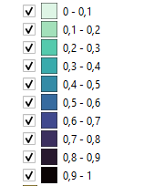

<!DOCTYPE html>
    <html lang="es">
    <head>
        <base target="_top">
        <meta charset="utf-8">
        <meta name="viewport" content="width=device-width, initial-scale=1">
        <title>Visualizador 50/50</title>
        <link rel="stylesheet" href="https://unpkg.com/leaflet@1.9.4/dist/leaflet.css" integrity="sha256-p4NxAoJBhIIN+hmNHrzRCf9tD/miZyoHS5obTRR9BMY=" crossorigin=""/>
        <script src="https://unpkg.com/leaflet@1.9.4/dist/leaflet.js" integrity="sha256-20nQCchB9co0qIjJZRGuk2/Z9VM+kNiyxNV1lvTlZBo=" crossorigin=""></script>
        <style>
        html, body {
            height: 100%;
            margin: 0;
        }
        .leaflet-container {
            height: 800px;
            width: 800px;
            max-width: 100%;
            max-height: 100%;
        }
        </style>
    </head>
    <body>
        <div id="map" style="width: 800px; height: 800px;"></div>
        <script type="text/javascript" src="comedores.js"></script>
        <script type="text/javascript" src="i5050st.js"></script>
        <script>
            const map = L.map('map').setView([-40, -63], 4);
            const tiles = L.tileLayer('https://tile.openstreetmap.org/{z}/{x}/{y}.png', {
                maxZoom: 19,
                attribution: '&copy; <a href="http://www.openstreetmap.org/copyright">OpenStreetMap</a>'
            }).addTo(map);
            // seteo estilo del punto
            var geojsonMarkerOptions = {
                radius: 4,
                fillColor: "#ff7800",
                color: "#000",
                weight: 1,
                opacity: 1,
                fillOpacity: 0.8
            };
            // seteo estilo de i5050st
            function style(feature) { 
                return { 
                fillColor: feature.properties.color, 
                weight: 1, 
                opacity: 1, 
                color: 'white', 
                dashArray: '2', 
                fillOpacity: 0.7 
                }; 
            };
            // seteo popup de los puntos
            function onEachFeature(feature, layer) {
                if (feature.properties) {
                    layer.bindPopup(
                        '<b>Proyecto Alimentario: ' + feature.properties.proyecto_alimentario + '</b>' +
                        '<br><br>Organización Solicitante: ' + feature.properties.organizacion_solicitante +
                        '<br><br>Organización Ejecutante: ' + feature.properties.organizacion_ejecutante + 
                        '<br><br>Cantidad de personas: ' + feature.properties.cantidad_de_personas +
                        '<br>Desayunos Diarios: ' + feature.properties.desayunos_diarios +
                        '<br>Almuerzos Diarios: ' + feature.properties.almuerzos_diarios + 
                        '<br>Meriendas Diarias: ' + feature.properties.meriendas_diarias +
                        '<br>Meriendas Reforzadas Diarias: ' + feature.properties.meriendas_reforzadas_diarias +
                        '<br>Cenas Diarias: ' + feature.properties.cenas_diarias +
                        '<br>Prestaciones Diarias: ' + feature.properties.prestaciones_diarias
                    );
                }
            };
            // seteo popup de los poligonos
            function onEachFeature_pol(feature, layer) {
                if (feature.properties) {
                    layer.bindPopup(
                        '<b>Departamento: <b>' + feature.properties.nam + '</b>' +
                        '<br>Indice 50/50 st: ' + feature.properties._i5050st
                    );
                }
            };
            // seteo la leyenda
            L.LogoControl = L.Control.extend({
                options: {
                    position: 'topleft'
                },
                onAdd: function (map) {
                    var container = L.DomUtil.create('div', 'leaflet-bar leaflet-control logo-control');
                    var button = L.DomUtil.create('a', '', container);
                        button.innerHTML = '';
                    L.DomEvent.disableClickPropagation(button);
                    container.title = "Leyenda de la capa";

                    return container;
                },
            });
            new L.LogoControl().addTo(map)
            // agrego las capas
            const i5050 = L.geoJson(i5050st, {style: style, onEachFeature: onEachFeature_pol}
            ).addTo(map);
            const geojson = L.geoJson(comedores, {
                pointToLayer: function (feature, latlng) {return L.circleMarker(latlng, geojsonMarkerOptions);},
                onEachFeature: onEachFeature
            }).addTo(map);                      
        </script>
    </body>
</html>